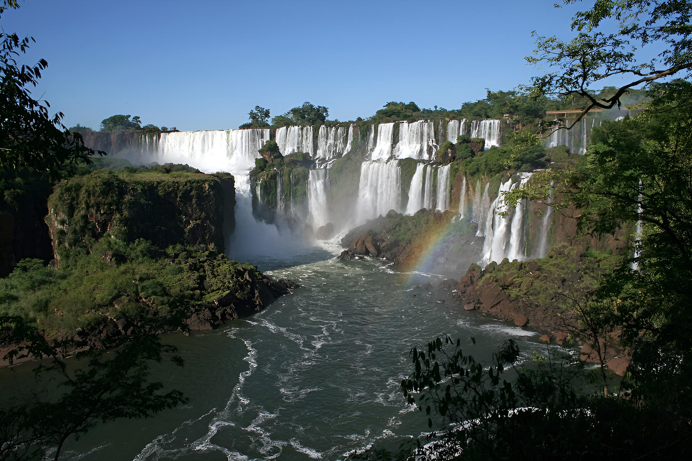

Iguazú: maravilla natural
Ubicadas en la provincia de Misiones, las Cataratas del Iguazú son uno de los destinos más impresionantes de Argentina y del mundo. Conformadas por cientos de saltos de agua, se encuentran rodeadas por la exuberante selva misionera, lo que las convierte en un paisaje único e inolvidable.
El parque ofrece una gran variedad de recorridos. Desde pasarelas que acercan a la imponente Garganta del Diablo hasta senderos más tranquilos donde se pueden observar aves, mariposas y la fauna típica de la región. Además, se pueden realizar paseos en bote que permiten sentir la fuerza de las cascadas de cerca, una experiencia que combina aventura y naturaleza.
Más allá de las cataratas, la zona cuenta con alojamientos de todos los estilos, desde cabañas en la selva hasta hoteles con spa. Los turistas también pueden visitar el lado brasileño del parque, que ofrece panorámicas espectaculares y miradores perfectos para fotografía.
La mejor época para visitar es entre mayo y septiembre, cuando hay menos lluvias y las temperaturas son más agradables. Sin embargo, cada estación tiene su encanto: en verano la selva se muestra más verde y vibrante, y la experiencia de los paseos acuáticos es aún más refrescante.
Ya sea para disfrutar de la naturaleza, la aventura o simplemente relajarse en un entorno increíble, Iguazú ofrece una experiencia que combina emoción y belleza. Sin dudas, es un destino que una vez que visitas, queda grabado en la memoria para siempre.
← Volver a Categorías